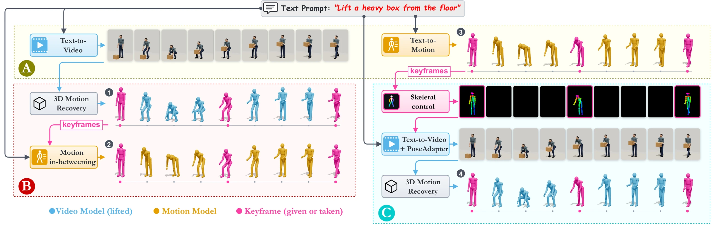

Motion range & semantic alignment
Video models can generate a broader range of meaningful activities: uncommon and complex movements, simultaneous or sequential actions, and interactions with objects or the environment.
Generate a video, lift the person into 3D, and the motion comes out more natural, and more faithful to the prompt, than what dedicated motion models produce, especially for complex and compound actions.
of human judgments found V2M better aligned with the prompt than Kimodo in prompt-only generation.
action completion for V2M vs. Kimodo: the video model performs every requested action far more often.
of judgments preferred V2M for motion naturalness over a dedicated text-to-motion model.
VLM-judged wins on complex prompts when a video model enriches Kimodo’s animation from just 5 keyframes.
Video foundation models have emerged as powerful generators of dynamic visual content, exhibiting remarkable capabilities in synthesizing complex actions and interactions. We argue that these models have also become excellent motion generators, with motion priors that are richer and more general than those learned by dedicated motion models.
Their advantage extends beyond visual realism and is manifested in two important aspects: motion naturalness, including coherent body coordination, physical plausibility, and realistic interactions with objects and the environment; and motion scope, encompassing a much broader range of activities and semantic coherence, particularly uncommon, complex, and compound actions.
To investigate this position, we introduce a common evaluation framework that compares video and dedicated motion models through three complementary settings: text-only motion generation, reconstruction of video-generated motion from sparse keyframes, and video-based enrichment of motion-model outputs. By converting all outputs into a shared 3D skeletal representation, we evaluate motion naturalness, semantic alignment, action coverage, physical motion characteristics, and fidelity to motion constraints.
Our results suggest that video foundation models can generate more natural and semantically meaningful movements, particularly for complex and compound actions. Moreover, we investigate motion-conditioned generation through loose skeletal control, finding that dedicated motion models do not consistently improve video-generated motion, while video models can enrich skeletal animations using sparse motion guidance. Our findings suggest a shift in the role of specialized motion models, from generating complete animations to guiding and controlling the richer motion capabilities already embedded in video foundation models.
Video models output pixels and motion models output skeletons, so we bring both into the same 22-joint SMPL representation. Video is lifted to 3D with GVHMR; motion models are rendered as-is. Three complementary experiments then compare them. Pick one to see where it lives in the pipeline.

Video models can generate a broader range of meaningful activities: uncommon and complex movements, simultaneous or sequential actions, and interactions with objects or the environment.
Video models produce more natural, contextually appropriate movement: better body coordination, temporal coherence and consistency with the intended action.
Through loose skeletal control, a video model can enrich an existing animation with richer motion while keeping the structure set by a handful of keyframes.
Every clip renders all models on the same skeleton, beside the video the motion was lifted from. Pick an experiment, then a prompt. Use ← → to step through clips and Space to pause.
We separate whether the action was performed from how smooth the kinematics are: a motion model that barely moves can score low jerk without doing what was asked. So we combine a human study, a VLM judge and kinematic metrics.
Did the animation perform every requested action?
For compound prompts: are actions in the right order, or at the same time?
Online perceptual study, 43 participants, pairwise V2M vs. Kimodo over 9, 8 and 9 animation pairs in Exp. A, B and C. Win/tie/loss is from V2M’s perspective.
Qwen3-VL-32B-Instruct compares anonymized motion pairs, in both presentation orders, for alignment with the text and for naturalness. 65, 64 and 57 prompts in Exp. A, B and C. In B most judgments are ties: dedicated motion models reconstruct V2M’s keyframes without improving on its motion.
| Exp. | Method | Contact % |
Positional jerk m/s³ ↓ | Ang. RMS °/s² ↓ | Foot sliding cm/s ↓ |
||
|---|---|---|---|---|---|---|---|
| Hands | Feet | Pelvis | |||||
Bold marks the lowest value per experiment. Contact coverage is descriptive. Kinematic metrics are mixed, and dedicated models can score low errors through limited or idle movement, so these numbers are read together with the semantic and perceptual results.
Under loose control, lower keyframe error does not mean better motion: deviations can enrich the in-between movement while keeping the intended action. In C, errors also include the depth ambiguity of 2D guidance and the 3D reconstruction step.
Animation is no longer primarily about generating motion from scratch, but about directing and shaping the rich motion knowledge already embedded in video foundation models.
From text alone, lifted video motion wins on semantic alignment, naturalness and action coverage, most of all for complex and compound prompts.
Dedicated motion models don’t consistently improve video-derived motion, but their animations make excellent sparse guidance for a video model.
Extracting accurate, editable 3D from video (fast motion, occlusion, inversion), more expressive loose control, and moving beyond one person to interacting characters, objects and scenes.
@article{izadpanah2026video,
title = {Video Models are Excellent Motion Models},
author = {Izadpanah, Kian and Mahdavi Amiri, Ali and Cohen-Or, Daniel
and Chrysanthou, Yiorgos and Aristidou, Andreas},
year = {2026}
}